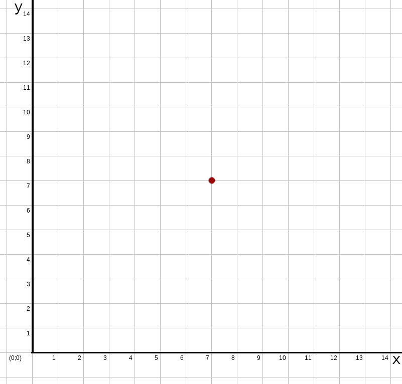
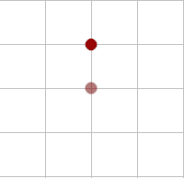
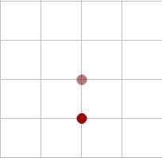
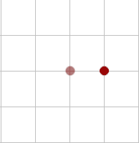
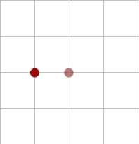

A figura seguinte ilustra um plano euclidiano. A imagem pode ser ampliada clicando no pequeno ícone no canto superior direito.
Na horizontal nós temos o eixo X e na vertical temos o eixo Y. Então, qualquer ponto nesse plano pode ser representado por um par de coordenadas (um valor para a coordenada X; e um valor para a coordenada Y). E representamos este par no formato (x;y).
Os nosso algoritmos vão controlar um personagem que vai sempre vai começar no ponto (7;7), como ilustrado por um ponto vermelho na figura anterior.
Mover para o norte, significa que o personagem vai andar para cima no plano (ou seja, adiciona 1 na posição Y).
Mover para o sul, significa que o personagem vai andar para baixo no plano (ou seja, subtrai 1 na posição Y).
Mover para o leste, significa que o personagem vai andar para direita no plano (ou seja, adiciona 1 na posição X).
Mover para o oeste, significa que o personagem vai andar para a esquerda no plano (ou seja, subtrai 1 na posição X).
